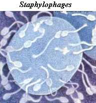
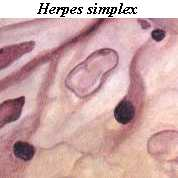
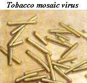
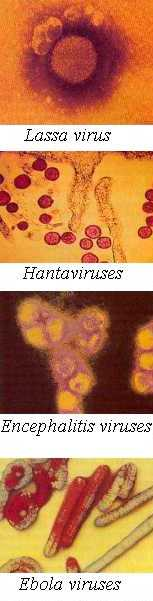
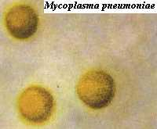
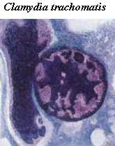

ANTI-VIRAL IMMUNITY
  
The viruses provoke effective immune response in various forms. At the spot of their penetration into mucosa and skin viruses are attacked by IgA and IFNs. During viremia they incite cytokine cascade and are subdued to circulating Ig action. The cells of target organs, infected by virus, express viral antigens and neoantigens, induced by virus, hence being subjected to cytotoxic T-cells’ attack. NK-cells and antibody-dependant K-cells are also able to hurt viral carriers, as well as phagocytosis and complement system.
The viral antigens can be processed along with both endocellular and exocellular patterns, in context of both Class 1 and Class 2 MHC-glycoproteins. So, both CD4+ and CD8+ lymphocytes recognize them. IFNs promote the expression of MHC-antigens on virus-containing cells, supplying them with APC properties.

It has been shown by many experiments, that protective action in many viral infections is related mostly or exclusively to CD8+ dependent effects. Circulating immunoglobulins are effective as immune protectors only in few viral infections (hepatitis of various types, measles, German measles). Furthermore, they act preferentially during early stage of viral aggression, on the background of viremia, before virus gets into the cells. Sometimes it is Ig response, which aggravates the course of viral infections. Neutralization of viral particles by Ig may cause immune complex diseases and even lead to appearance of persistent virus. For example, lymphocytic choriomeningitis virus in mice precipitates immune complex glomerulonephritis.The phagocytosis of virus containing cells and immune complexes may contaminate phagocytes and withdraw viral antigens from the cell surface, making infected targets less prone to immune surveillance of cytotoxic lymphocytes. HIV-virus is especially ingenious in fraudulence of immune system. Regardless to the special tricks of separate viruses, in all viral infections the very nature of causative agent requires “blind firing by squares”: it means that cytotoxic agents extinguish not virions separately, but rather the whole self cells, carrying viral and/or virus-induced antigens. This fact was shown due to the long development of studies, originated by another Nobel Prize winner of 1976 B. Blumberg, concerning to hepatitis B virus and autoreactive damage of liver cells in viral hepatitis.
The inevitable self-damage makes anti-viral immunity fraught with autoimmune adverse reactions. In plus to this, many viruses use for intracellular penetration some surface cell receptors, normally utilized for hormone or neurotransmitter recognition (for instance, acetylcholine receptor is used by rabies virus).
According to the concept, formulated by P. Plotz (1983) and N. Fields (1984), immune response against viral proteins, used for virus internalization, must provoke the production of anti-idiotypic autoantibodies, which represent internal immunological mirror image of viral epitopes. Hence, these anti-idiotypes will be able to bind the same cellular receptors, as virus does. The proposed result may manifest in autoimmune receptor diseases, with block either stimulation of appropriate receptors by anti-idiotypic autoantibodies. So, defense against virus may trigger secondary autoimmune endocrine or neuroendocrine disease.
S. Nepom et al. (1983) and K. Yun (1982) has proven the actual validity of this hypothesis on the model of rheovirus T3 and autoimmune encephalitis, as well as for rubella and mumps viruses - and autoimmune insulitis.
A virus can induce polyclonal lymphoid activation. As it was mentioned earlier, this phenomenon also causes inaccurate and redundant work of immune system. As a result, systemic toxic action of the excessive cytokines may occur, as well as autoimmune alterations. The bright example is the action of EBV in infectious mononucleosis, with its severe fever and autoimmune anemia.
 
NEXT CHAPTER OR